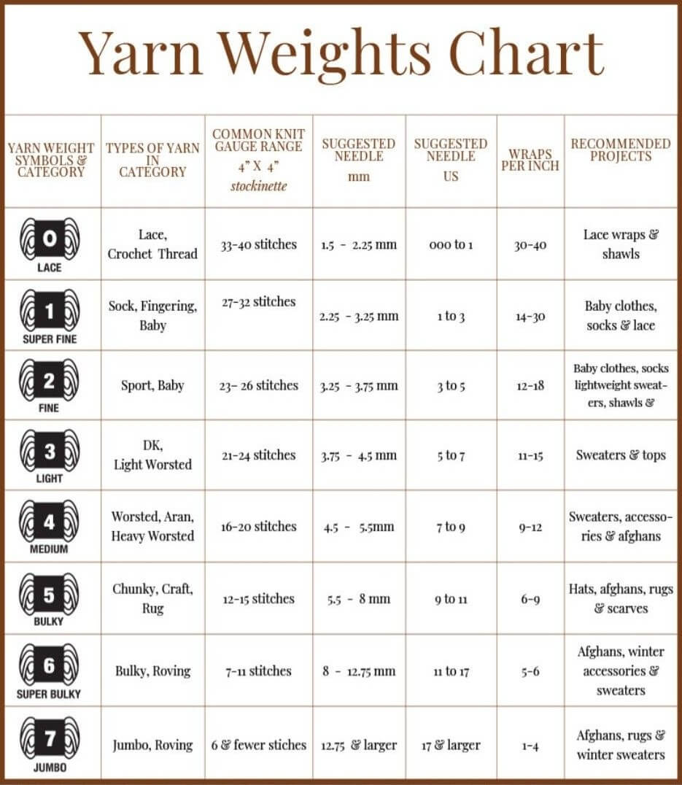

Welcome to the Knit section of The Yarn Corner! Knitting uses two needles to form a series of interconnected loops called stitches. The two foundational stitches in knitting are the knit stitch and the purl stitch, and nearly every knitting pattern is built from a combination of these stitches. Beginners start by learning how to cast on (getting stitches onto the needles), practice basic stitch patterns, and then bind off to finish a piece. While it can be a bit tricky to get the hang of, knitting becomes very rhythmic and relaxing with practice.
Knitting requires only a few basic supplies to get started: basic yarn and knitting needles!

The cast on is the method used to create the first row of loops on your needle and forms the foundation of your project.
The knit stitch is the most basic stitch in knitting and creates a smooth "V"-shaped pattern which helps to form the front side of most knitting projects.
The purl stitch is the reverse of the knit stitch which produces a bumpy texture is is often used to create patterns like ribbing.
Binding off is the method used to finish a knitting project which helps secure the stitches so they don't unravel.
For visual learners, we have compiled a list of YouTube tutorials that go over some of the basics of knitting.